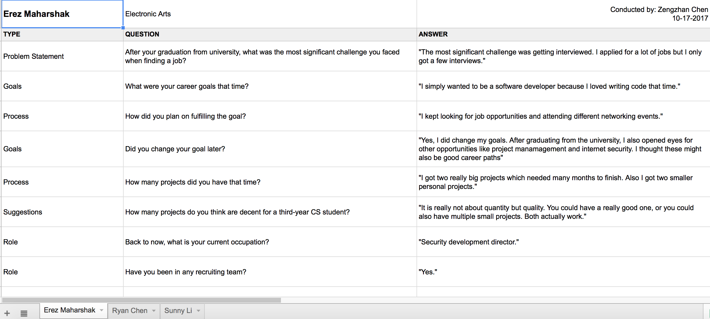
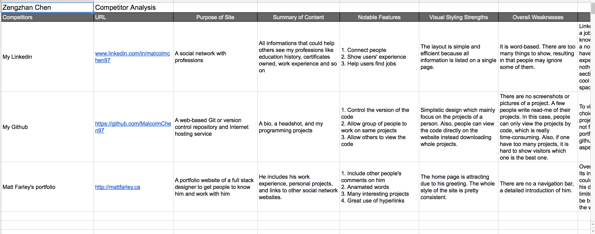
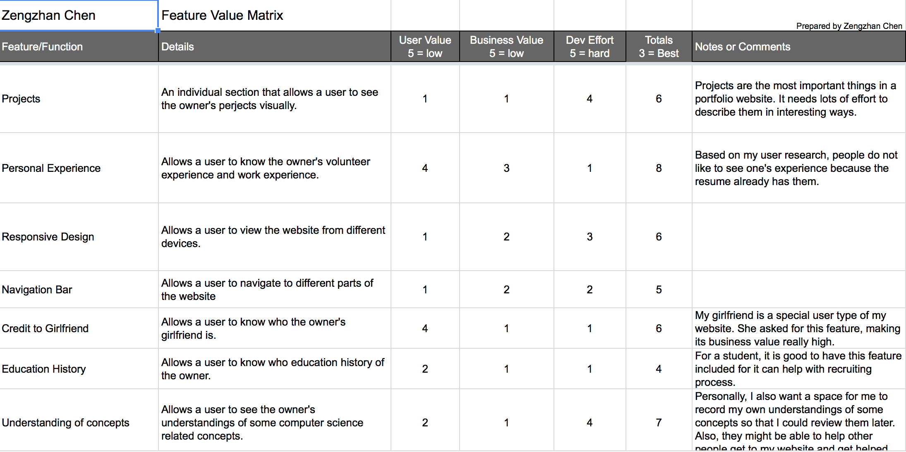
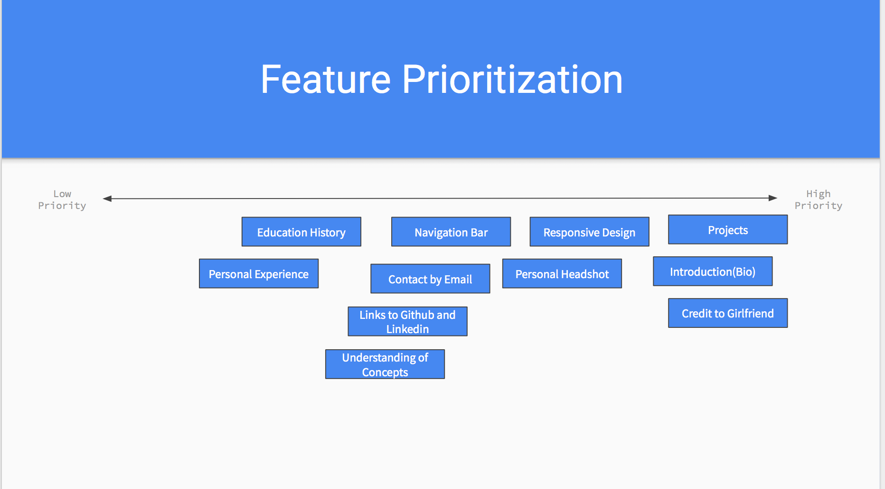
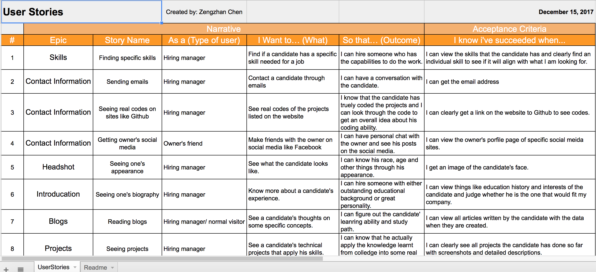
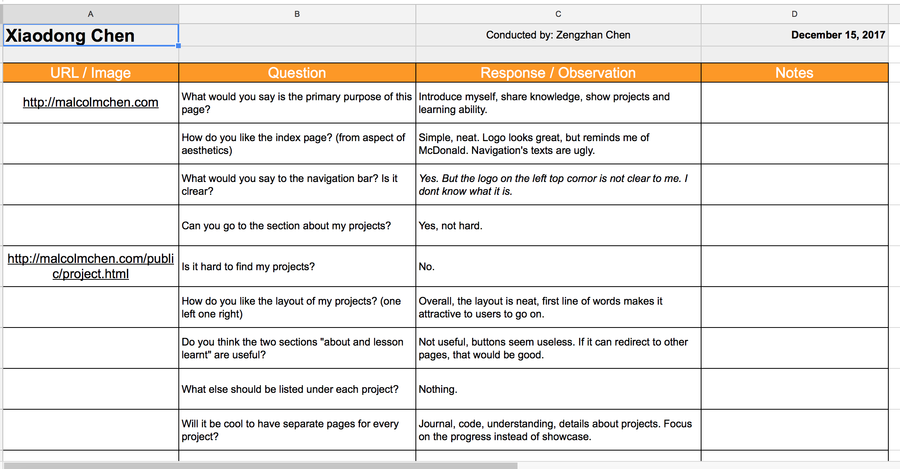
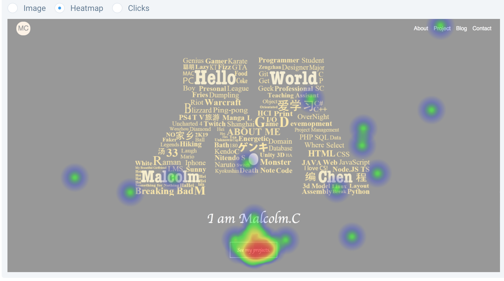

Here are what I've Learnt so far
User Research


User Interview
A common user research technique used to get information from potential users.
After doing the user interviews, I got an overall idea about the function of a portfolio website. I chose there types of users: hiring managers, cs related peers, and non-technical people. I asked them about what they would look for on a portfolio website, resulting in that I knew what features should be included in my own site.

Competitor Analysis
A strategy to deternmine competitors' strength and weaknesses relative to your own products.
In my competitor analysis, besides looking at others' portfolio websites, I also treated Github and Linkedin as my website's competitors. Most technical hiring managers would go Github directly, and most non-technical hiring mangers would go Linkedin. Both of them would not choose to a person's portfolio website. To solve this problem, I analysed strengths and shortages of both competitors. Then I just combined the features of both with my own website.

Feature Value Matrix
It maps the value of your potential features and services across business needs and other judgements
After doing user interviews, I collected many different features like projects, about, blog, etc. Since they were from all different types of users, it was hard to tell what was more important directly. The feature value matrix came to help.

Feature Prioritization
A process telling you what you should do first
I had plenty of features originally. However, it was nearly impossible to implenment them all due to my limited time and expertises. So I just priortized all my features and implemented them in order.
User Testing

User Story
An end-user perspective of a feature.
After having a working prototype of my website, I took a look at my feature list and used it to create my user stories. By doing this I could make sure that each feature could do what it was meant to do.

Cognitive Walkthrough
An evaluation method in which one or more evaluators work through a series of tasks
My cognitive walkthrough actually surprised me a lot. Many evaluators did things in ways I never imagine. And some tasks seemed hard for them to achieve. Also, what I thought cool were not attractive to them. This process really told me that people are different and I could not just do what I wanted and ignored users.

User Tests
I used click test and question test. The most significant challenge was that test results were not that reliable. For example, in my click tests, I asked testers to click a button to navgate to my project section. Heat map showed that many users click some places where nothing exists. And it was because they were doing the test on phone and wanted to scoll down. This really made test results hard to analysis.
Summary of Findings
In this project, I noticed the huge difference between thoughts and reality. I got things that users really liked, and I also got things users felt uncomfortable with. These findings together acknowedged how to improve my website and really put it into use in the future.
One of the major finding was my website's style. I used black and white style to make things clear. Many users really liked the style because it is clean and neat. For functions of websites, many user did not use them as I expected. I had a back-to-top button when users wanted to scoll up. However, they normally just ignore it and still used scrooling. Also, my projects listed still cannot show my strengths. Many users said that they would rather go to my Github to see my projects, meaning this features failed.
Incorporation of Findings
I got two major things to do based on my findings. First, I would imporve my website's looking because many people said it looks "boring". It is hard to solve this problem because I am not an artist. But one thing I can do is to use more fancy effects. I wanted to add animations and other CSS effects to my pages at the begining, but I really did not have time to learn those complicated stuffs. However, in the future, I would definitely use them to make my pages more alive.
The other things would be related to my projects, which are cores of my portfolio website. Now I only have a screenshoot and a brief description for each of my projects, which are not enough for a hiring manager to get to know the projects. In order to show more things about a project, I plan to create seperate pages for all projects so that I can include key features of projects, more pictures of projects or even videos of demos.